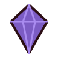

KAZANDIN
Düşmüş Kale Lordu devrildi.
Süre20:00

Seviye24Öldürme2.941
Kurulan kombolar

Zincirleme Patlama
Seken Mermi + Barut Kesesi
Son Mermi Patlar
Hızlı Doldurma ile
Yıkım Zinciri
Dinamit + Fazladan Mermi
TEKRAR OYNA
ANA MENÜ

Seviye24